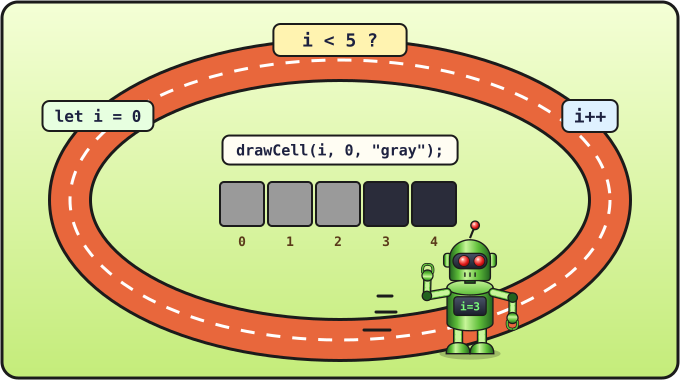

Урок 6 из 16 ⏱ 45 минут
Циклы
Как нарисовать ряд из 20 клеточек? Можно написать 20 строчек с drawCell… А можно одну, если попросить компьютер повторить. Повторение в программировании называется циклом.
- узнаешь цикл
forи из каких частей он состоит; - проследишь шаг за шагом, как работает цикл;
- нарисуешь ряды, столбики и диагонали из клеточек.
| 5 мин | Повторение: функции drawCell и clearField |
| 15 мин | Цикл for в консоли: считаем до 10 |
| 15 мин | Рисуем циклом на холсте |
| 10 мин | Задания и уборка |

for — бег по кругу: старт let i = 0, проверка i < 5, шаг i++. На каждом круге рисуется ещё одна клетка.Считаем до пяти
Добавь в конец скрипта snake.html такие строки:
for (let i = 0; i < 5; i++) {
console.log("Шаг номер " + i);
}
Открой консоль (F12) и обнови страницу:
Шаг номер 0 Шаг номер 1 Шаг номер 2 Шаг номер 3 Шаг номер 4
Одна строчка внутри цикла выполнилась 5 раз, и каждый раз в переменной i лежало новое число.
Из чего сделан цикл for
В круглых скобках после for — три части, разделённые точкой с запятой:
| Часть | Что значит |
|---|---|
let i = 0 | Начало: заводим счётчик i и кладём в него 0. |
i < 5 | Условие: повторяем, пока i меньше 5. |
i++ | Шаг: после каждого круга прибавляем к i единицу (это то же, что i = i + 1). |
А в фигурных скобках { } — тело цикла, то, что надо повторять.
Проследим, как компьютер выполняет цикл:
i = 0. Правда, что 0 < 5? Да → выполняем тело →i++, теперьi = 1.- 1 < 5? Да → тело →
i = 2. - … так же для 2, 3 и 4 …
i = 5. 5 < 5? Нет → цикл закончен, идём дальше по программе.
i понятен любому программисту.
Рисуем циклом
Замени цикл с console.log на этот:
for (let i = 0; i < 20; i++) {
drawCell(i, 0, "gray");
}
Вдоль верхнего края появился серый ряд из 20 клеточек! При каждом повторе i увеличивается, и следующая клеточка рисуется правее: (0, 0), (1, 0), (2, 0)… (19, 0).
Число 20 — это количество клеточек в ряду, и оно нам ещё много раз понадобится. Давай положим его в переменную. Добавь её сразу под let size = 20;:
let cells = 20;
Теперь в цикле можно писать i < cells. Если когда-нибудь захочешь поле побольше, менять придётся только одно число.
Попробуй сам
Меняй строчку внутри цикла и смотри, что получится:
| Внутри цикла | Что нарисуется |
|---|---|
drawCell(i, 0, "gray"); | ряд сверху |
drawCell(i, 19, "gray"); | ряд снизу |
drawCell(0, i, "gray"); | столбик слева |
drawCell(i, i, "yellow"); | диагональ из угла в угол |
Внутри одного цикла можно написать несколько команд. Например, такой цикл нарисует рамку вокруг всего поля:
for (let i = 0; i < cells; i++) {
drawCell(i, 0, "gray");
drawCell(i, 19, "gray");
drawCell(0, i, "gray");
drawCell(19, i, "gray");
}
i++), цикл никогда не закончится и страница «зависнет». Ничего страшного: закрой вкладку браузера, исправь код и открой файл снова.
- Нарисуй крест: столбик и ряд, которые пересекаются в центре поля (в клеточке 10).
- Нарисуй змейку длиной 8 клеточек одним циклом.
- Как нарисовать каждую вторую клеточку в ряду? Подсказка: шаг цикла может быть
i = i + 2. - ⭐ Цикл можно положить внутрь другого цикла. Попробуй и объясни, что получилось:
for (let y = 0; y < cells; y++) { for (let x = 0; x < cells; x++) { drawCell(x, y, "darkgreen"); } }
Уборка
Это были эксперименты. Перед следующим уроком удали все циклы, которые рисуют на поле, но оставь переменную cells. Должно остаться вот так:
📄 Весь файл snake.html после этого урока
<!DOCTYPE html>
<html>
<head>
<meta charset="utf-8">
<title>Змейка</title>
</head>
<body>
<h1>Змейка</h1>
<canvas id="game" width="400" height="400"></canvas>
<script>
let canvas = document.getElementById("game");
let ctx = canvas.getContext("2d");
let size = 20;
let cells = 20;
function clearField() {
ctx.fillStyle = "black";
ctx.fillRect(0, 0, 400, 400);
}
function drawCell(x, y, color) {
ctx.fillStyle = color;
ctx.fillRect(x * size, y * size, size - 1, size - 1);
}
clearField();
drawCell(10, 10, "lime");
drawCell(9, 10, "lime");
drawCell(8, 10, "lime");
drawCell(15, 10, "red");
</script>
</body>
</html>
Проверь себя
- Я могу назвать три части цикла
for. - Я понимаю, почему цикл
i < 20делает ровно 20 повторов (от 0 до 19). - Я умею нарисовать циклом ряд и столбик клеточек.